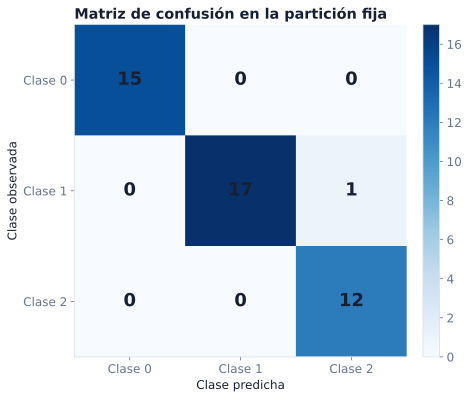

Condicionamiento, estimación, riesgo e incertidumbre
Referencia matemática sobre aprendizaje a partir de muestras
La regresión, la clasificación y la evaluación de modelos han planteado una misma dificultad de varias formas: la cantidad de interés pertenece a una distribución, pero el cálculo disponible utiliza una muestra particular. La media condicional, la probabilidad de una clase, el desempeño esperado de una regla y la variación de una métrica son ejemplos de esa diferencia entre objeto poblacional y evidencia observada.
Este capítulo estudia ese vínculo de manera sistemática. El condicionamiento describe cómo cambia una distribución cuando se conocen las entradas. La teoría de estimación distingue la cantidad poblacional, el procedimiento que la aproxima y el valor obtenido. El riesgo esperado establece el objetivo de una regla de predicción, y la incertidumbre cuantifica cuánto puede variar la evidencia empírica utilizada para evaluarla. Las secciones amplían desarrollos que aparecen en los capítulos de regresión, regularización, clasificación y estrategia de modelado.
Al terminar el capítulo, el lector podrá:
- calcular e interpretar probabilidades y distribuciones condicionales;
- utilizar esperanza condicional y sus propiedades fundamentales;
- explicar por qué la media condicional y la probabilidad condicional son objetivos naturales de regresión y clasificación;
- distinguir estimando, estimador, estimación y distribución muestral;
- analizar sesgo, varianza, error cuadrático medio y consistencia;
- separar riesgo esperado y riesgo empírico;
- explicar los papeles de entrenamiento, validación y prueba;
- estimar el error estándar de una media de pérdidas e interpretar un intervalo;
- decidir qué debe remuestrearse en un bootstrap;
- reconocer cuándo un cambio de distribución limita la evaluación.
Los conceptos se conectan con los modelos de la siguiente manera:
| Objeto de este capítulo | Problema que lo hace necesario |
|---|---|
| esperanza condicional | predecir una respuesta numérica bajo pérdida cuadrática |
| probabilidad condicional | modelar una clase y separar probabilidad de decisión |
| estimador y distribución muestral | describir cómo cambia un ajuste con la muestra |
| riesgo esperado y empírico | distinguir objetivo poblacional y función calculable |
| sesgo y varianza | estudiar complejidad y regularización |
| error estándar y bootstrap | cuantificar variación en métricas y comparaciones |
| cambio de distribución | evaluar si los datos representan el contexto de uso |
Esta organización permite volver a la teoría desde un problema ya conocido y, al mismo tiempo, comparar bajo una notación común ideas que aparecieron en capítulos diferentes.
Probabilidad condicional
La información modifica las probabilidades relevantes. Si \(A\) y \(B\) son eventos con \(\mathbb P(B)>0\), la probabilidad condicional de \(A\) dado \(B\) es
\[ \mathbb P(A\mid B) =\frac{\mathbb P(A\cap B)}{\mathbb P(B)}. \]
El numerador conserva los resultados en los que ocurren ambos eventos; el denominador renormaliza la probabilidad dentro del conjunto \(B\).
Ejemplo 1: una tabla de contingencia. En una muestra de 200 solicitudes, 50 corresponden al grupo \(B\) y 20 de esas 50 presentan el resultado \(A\). Las proporciones empíricas son
\[ \widehat P(B)=\frac{50}{200}, \qquad \widehat P(A\cap B)=\frac{20}{200}, \]
de modo que
\[ \widehat P(A\mid B)=\frac{20/200}{50/200}=0.4. \]
El denominador de la proporción condicional es 50, no 200.
De la definición se obtiene la regla del producto:
\[ \mathbb P(A\cap B) =\mathbb P(A\mid B)\mathbb P(B). \]
Si \(B_1,\ldots,B_K\) forman una partición de \(\Omega\), entonces la ley de probabilidad total establece
\[ \mathbb P(A) =\sum_{k=1}^K\mathbb P(A\mid B_k)\mathbb P(B_k). \]
Esta identidad separa la frecuencia del resultado dentro de cada grupo de la frecuencia con la que aparecen los grupos.
Fórmula de Bayes
Siempre que \(\mathbb P(A)>0\) y \(\mathbb P(B)>0\),
\[ \mathbb P(B\mid A) =\frac{\mathbb P(A\mid B)\mathbb P(B)}{\mathbb P(A)}. \]
Con una partición \(B_1,\ldots,B_K\),
\[ \mathbb P(B_j\mid A) =\frac{\mathbb P(A\mid B_j)\mathbb P(B_j)} {\sum_{k=1}^K\mathbb P(A\mid B_k)\mathbb P(B_k)}. \]
La fórmula muestra por qué una tasa de acierto condicional no basta para interpretar una prueba: también importa la prevalencia previa de cada grupo.
Ejemplo 2: una prueba y una condición poco frecuente. Suponga que una condición afecta al 1% de una población, una prueba es positiva en el 95% de quienes tienen la condición y en el 5% de quienes no la tienen. Entonces
\[ \mathbb P(C\mid +) =\frac{0.95(0.01)}{0.95(0.01)+0.05(0.99)} \approx0.161. \]
Un resultado positivo no implica una probabilidad posterior de 95%. La diferencia proviene de intercambiar \(\mathbb P(+\mid C)\) con \(\mathbb P(C\mid +)\) y de ignorar la prevalencia.
Independencia vista mediante condicionamiento
Si \(A\) y \(B\) son independientes y \(\mathbb P(B)>0\), entonces
\[ \mathbb P(A\mid B)=\mathbb P(A). \]
Observar \(B\) no modifica la probabilidad de \(A\). Esta igualdad es equivalente a \(\mathbb P(A\cap B)=\mathbb P(A)\mathbb P(B)\) cuando las probabilidades necesarias son positivas.
Distribuciones condicionales
Para variables discretas \(X\) y \(Y\), la función de masa condicional es
\[ p_{Y\mid X}(y\mid x) =\mathbb P(Y=y\mid X=x) =\frac{p_{X,Y}(x,y)}{p_X(x)}, \]
si \(p_X(x)>0\). Para cada valor fijo de \(x\),
\[ \sum_y p_{Y\mid X}(y\mid x)=1. \]
Si \((X,Y)\) posee densidad conjunta y \(f_X(x)>0\), una densidad condicional puede definirse como
\[ f_{Y\mid X}(y\mid x) =\frac{f_{X,Y}(x,y)}{f_X(x)}. \]
Cuando \(X\) es continua, normalmente \(\mathbb P(X=x)=0\). Por ello la distribución de \(Y\) dado \(X=x\) no se obtiene dividiendo por esa probabilidad puntual. La fórmula de densidades, o más generalmente una distribución condicional regular, proporciona el objeto adecuado. En los modelos de este libro asumiremos que existe una versión condicional bien definida para los valores relevantes de \(x\).
La distribución conjunta puede reconstruirse a partir de una marginal y una condicional. En el caso de densidades,
\[ f_{X,Y}(x,y)=f_{Y\mid X}(y\mid x)f_X(x). \]
Este factor permite separar cómo aparecen las entradas de cómo se distribuye la salida entre unidades con entradas semejantes.
Esperanza condicional
La esperanza condicional de \(Y\) dado \(X\) es una variable aleatoria que depende de \(X\). Se denota por
\[ \mathbb E[Y\mid X]. \]
En condiciones usuales puede escribirse como una función \(\mu(X)\), donde
\[ \mu(x)=\mathbb E[Y\mid X=x]. \]
Para variables discretas,
\[ \mu(x)=\sum_y y\,p_{Y\mid X}(y\mid x). \]
Si existe una densidad condicional,
\[ \mu(x)=\int y f_{Y\mid X}(y\mid x)\,dy. \]
La función \(\mu\) se denomina función de regresión poblacional. No tiene que ser lineal. Una regresión lineal aproxima esta función dentro de una familia lineal; una red neuronal utiliza una familia más flexible.
Propiedades fundamentales
Si \(g(X)\) es integrable, entonces
\[ \mathbb E[g(X)Y\mid X] =g(X)\mathbb E[Y\mid X]. \]
La ley de la esperanza total afirma
\[ \mathbb E[\mathbb E[Y\mid X]]=\mathbb E[Y]. \]
Es decir, promediar primero dentro de cada valor de \(X\) y luego sobre la distribución de \(X\) recupera la media marginal.
Cuando \(Y\) tiene segundo momento finito, la varianza total se descompone como
\[ \operatorname{Var}(Y) =\mathbb E[\operatorname{Var}(Y\mid X)] +\operatorname{Var}(\mathbb E[Y\mid X]). \]
El primer término es la variación promedio que permanece entre unidades con el mismo \(X\). El segundo es la variación de las medias condicionales entre distintos valores de \(X\). Esta identidad separa variación no explicada por \(X\) de variación asociada a cambios en \(X\), sin convertir la asociación en una afirmación causal.
Ejemplo 3: media por grupos. Si \(X\) indica dos grupos con probabilidades 0.6 y 0.4, y las medias condicionales de \(Y\) son 10 y 15, entonces
\[ \mathbb E[Y]=0.6(10)+0.4(15)=12. \]
Conocer solo la media marginal 12 no revela las diferencias entre grupos.
Objetivos poblacionales en aprendizaje supervisado
El condicionamiento permite identificar qué cantidad intenta aproximar un modelo.
Pérdida cuadrática y media condicional
Sean \(Y\) y \(g(X)\) variables con segundo momento finito. Para un valor de \(X\), se puede escribir
\[ Y-g(X) =\big(Y-\mathbb E[Y\mid X]\big) +\big(\mathbb E[Y\mid X]-g(X)\big). \]
Al elevar al cuadrado y condicionar en \(X\), el término cruzado tiene esperanza cero porque
\[ \mathbb E[Y-\mathbb E[Y\mid X]\mid X]=0. \]
Por tanto,
\[ \mathbb E[(Y-g(X))^2\mid X] =\operatorname{Var}(Y\mid X) +\big(\mathbb E[Y\mid X]-g(X)\big)^2. \]
El primer término no depende de \(g\) y el segundo es no negativo. En consecuencia,
\[ g^*(x)=\mathbb E[Y\mid X=x] \]
minimiza el riesgo cuadrático entre todas las funciones admisibles. Si restringimos \(g\) a una familia, por ejemplo funciones lineales, el mejor elemento de esa familia no tiene por qué coincidir con la media condicional verdadera.
Clasificación binaria y probabilidad condicional
Si \(Y\in\{0,1\}\), definimos
\[ \eta(x)=\mathbb P(Y=1\mid X=x). \]
Para una predicción probabilística \(q\in(0,1)\), la pérdida logarítmica es
\[ \ell(q,y)=-y\log q-(1-y)\log(1-q). \]
El riesgo condicional es
\[ L_x(q) =-\eta(x)\log q-(1-\eta(x))\log(1-q). \]
Cuando \(0<\eta(x)<1\), su derivada y segunda derivada son
\[ L_x'(q) =-\frac{\eta(x)}q+\frac{1-\eta(x)}{1-q}, \]
\[ L_x''(q) =\frac{\eta(x)}{q^2} +\frac{1-\eta(x)}{(1-q)^2}>0. \]
La única solución de \(L_x'(q)=0\) es \(q=\eta(x)\) y es el mínimo. Si se extiende la pérdida a \(q\in[0,1]\) con la convención usual \(0\log0=0\), entonces para \(\eta(x)=0\) o \(1\) el mínimo se alcanza en el borde correspondiente.
Un modelo logístico produce
\[ \widehat p_\theta(x)=\sigma(x^\top\theta). \]
Esta es una probabilidad estimada. Solo bajo supuestos de especificación y ajuste adecuados puede identificarse con \(\eta(x)\). Incluso una probabilidad estimada que ordena bien los casos puede estar mal calibrada.
De probabilidad a decisión
Una probabilidad no determina por sí sola una clase. Si el costo de un falso negativo es \(c_{\mathrm{FN}}\) y el de un falso positivo es \(c_{\mathrm{FP}}\), una regla idealizada con costos constantes predice la clase positiva cuando
\[ \eta(x)> \frac{c_{\mathrm{FP}}}{c_{\mathrm{FP}}+c_{\mathrm{FN}}}. \]
En la práctica usamos \(\widehat p(x)\) y elegimos el umbral con datos de validación, no con el conjunto reservado para la estimación final. El umbral depende del uso, los costos, la prevalencia y la calibración; \(0.5\) no es una ley universal.
Ruido, residual y error de medición
Si definimos
\[ \mu(X)=\mathbb E[Y\mid X], \qquad \varepsilon=Y-\mu(X), \]
entonces, por construcción,
\[ \mathbb E[\varepsilon\mid X]=0. \]
La igualdad no afirma que \(\varepsilon\) sea independiente de \(X\) ni que tenga varianza constante. Tampoco implica una distribución normal.
Cuando se propone un modelo \(f_\theta(X)\) y se escribe
\[ Y=f_\theta(X)+\varepsilon, \]
la condición \(\mathbb E[\varepsilon\mid X]=0\) es un supuesto de especificación. Se cumple automáticamente solo si \(f_\theta(X)=\mu(X)\).
Conviene distinguir:
| Objeto | Definición | Momento en que existe |
|---|---|---|
| ruido \(\varepsilon\) | componente aleatoria no explicada dentro del modelo poblacional | antes de observar |
| residual \(r_i\) | \(y_i-\widehat y_i\) | después de ajustar y observar |
| error de medición | diferencia entre registro y cantidad que se pretendía medir | durante la medición |
| error de predicción | pérdida entre predicción y resultado en un caso | después de conocer el resultado |
Un residual puede reflejar variación intrínseca, variables omitidas, forma funcional inadecuada, cambio de población o error de medición. Un residual pequeño en los datos de ajuste no demuestra que el modelo represente correctamente el proceso.
Estimandos, estimadores y estimaciones
Estimando. Un estimando es la cantidad poblacional que se desea conocer. Puede ser un número, un vector, una función o una característica de una distribución.
Ejemplos de estimandos son
\[ \mu=\mathbb E[Y], \qquad p=\mathbb P(Y=1), \qquad \Sigma=\operatorname{Cov}(X), \qquad \mu(x)=\mathbb E[Y\mid X=x]. \]
En un modelo paramétrico \(\{P_\theta:\theta\in\Theta\}\), el parámetro \(\theta\) es un estimando si representa la característica poblacional que se desea conocer. En modelos predictivos, los coeficientes también pueden ser cantidades internas del procedimiento y no siempre poseen una interpretación poblacional única fuera de la familia elegida.
Estimador. Un estimador es una función de la muestra aleatoria,
\[ \widehat\theta_m=T(D_m), \]
diseñada para aproximar un estimando \(\theta\).
Antes de observar la muestra, \(\widehat\theta_m\) es una variable aleatoria. Después de observar \(d_m\), el valor
\[ \widehat\theta_m(d_m) \]
es una estimación. El estimador es la regla; la estimación es el resultado numérico de aplicarla.
| Nivel | Notación | Ejemplo |
|---|---|---|
| estimando | \(\mu=\mathbb E[Y]\) | media poblacional |
| estimador | \(\overline Y_m\) | media de una muestra todavía aleatoria |
| estimación | \(\overline y_m=12.4\) | valor calculado con la muestra observada |
| distribución muestral | ley de \(\overline Y_m\) | variación bajo muestras repetidas |
Sesgo
El sesgo de \(\widehat\theta_m\) para estimar \(\theta\) es
\[ \operatorname{Bias}(\widehat\theta_m) =\mathbb E[\widehat\theta_m]-\theta. \]
Un estimador es insesgado si el sesgo es cero. Esta es una propiedad bajo un modelo de muestreo, no una garantía de que la estimación observada sea igual al estimando. Un estimador insesgado puede tener gran variación.
Para una muestra iid con esperanza \(\mu\),
\[ \mathbb E[\overline Y_m] =\frac1m\sum_{i=1}^m\mathbb E[Y_i] =\mu, \]
de modo que la media muestral es insesgada para \(\mu\).
Varianza y error cuadrático medio
Para un estimador escalar, su varianza es
\[ \operatorname{Var}(\widehat\theta_m) =\mathbb E\left[ (\widehat\theta_m-\mathbb E[\widehat\theta_m])^2 \right]. \]
El error cuadrático medio respecto a \(\theta\) es
\[ \operatorname{MSE}(\widehat\theta_m) =\mathbb E[(\widehat\theta_m-\theta)^2]. \]
Al sumar y restar \(\mathbb E[\widehat\theta_m]\) se obtiene
\[ \operatorname{MSE}(\widehat\theta_m) =\operatorname{Var}(\widehat\theta_m) +\operatorname{Bias}(\widehat\theta_m)^2. \]
La identidad muestra que un estimador ligeramente sesgado puede tener menor error cuadrático medio si reduce suficientemente la varianza. La regularización explota esta posibilidad: introduce sesgo para estabilizar coeficientes y predicciones.
Consistencia
Una secuencia de estimadores es consistente para \(\theta\) si
\[ \widehat\theta_m\xrightarrow{\mathbb P}\theta \]
cuando \(m\to\infty\). La consistencia es una propiedad asintótica. No indica que una muestra finita sea suficiente ni corrige un estimando mal definido, selección sesgada o cambio de distribución.
Error estándar
La desviación estándar de la distribución muestral,
\[ \operatorname{sd}(\widehat\theta_m), \]
describe cuánto varía el estimador entre muestras. Como normalmente depende de cantidades desconocidas, se aproxima mediante un error estándar estimado. Reportar una estimación sin su error estándar puede ocultar que otras muestras producirían valores muy distintos.
Pérdida y riesgo esperado
Sea \(f:\mathcal X\to\mathcal A\) una regla y \(\ell:\mathcal A\times\mathcal Y\to[0,\infty)\) una función de pérdida. El riesgo de \(f\) bajo una distribución de interés \(P\) es
\[ R_P(f) =\mathbb E_{(X,Y)\sim P}[\ell(f(X),Y)]. \]
La pérdida asigna un costo a un caso; el riesgo promedia ese costo sobre la distribución. Cambiar la pérdida cambia el objetivo matemático.
Ejemplos:
| Problema | Pérdida por observación |
|---|---|
| regresión cuadrática | \((y-f(x))^2\) |
| regresión absoluta | \(|y-f(x)|\) |
| clasificación 0-1 | \(\mathbf 1\{f(x)\neq y\}\) |
| clasificación probabilística | \(-y\log q(x)-(1-y)\log(1-q(x))\) |
El riesgo se refiere a una distribución específica. Si el uso previsto sigue \(P_{\mathrm{uso}}\), el objetivo relevante es
\[ R_{\mathrm{uso}}(f) =\mathbb E_{P_{\mathrm{uso}}}[\ell(f(X),Y)]. \]
Una evaluación histórica solo informa sobre este riesgo si su distribución es comparable con la de uso.
Riesgo empírico
Dada una muestra observada \(d_m=((x_1,y_1),\ldots,(x_m,y_m))\), el riesgo empírico es
\[ \widehat R_m(f) =\frac1m\sum_{i=1}^m\ell(f(x_i),y_i). \]
Mediante la distribución empírica conjunta,
\[ \widehat P_m =\frac1m\sum_{i=1}^m\delta_{(x_i,y_i)}, \]
podemos escribir
\[ \widehat R_m(f) =\int\ell(f(x),y)\,d\widehat P_m(x,y). \]
Esta igualdad es el puente exacto entre una esperanza poblacional y una suma implementable.
Para una función \(f\) fija e independiente de una muestra iid, la ley de los grandes números permite que \(\widehat R_m(f)\) aproxime \(R_P(f)\) si la pérdida es integrable. La situación es distinta cuando \(f\) fue escogida para minimizar el riesgo sobre la misma muestra: entonces \(f\) depende de esos datos y el riesgo de entrenamiento puede ser optimista.
Minimización empírica del riesgo
En una familia \(\mathcal F\), un estimador por minimización empírica satisface
\[ \widehat f \in\operatorname*{arg\,min}_{f\in\mathcal F}\widehat R_{\mathrm{train}}(f). \]
La solución depende de la muestra. Una familia más flexible puede disminuir la pérdida de entrenamiento y, al mismo tiempo, aumentar la variación del modelo entre muestras. Regularización, validación y control de complejidad buscan equilibrar estos efectos.
Baselines
Un baseline es una regla simple y reproducible utilizada como referencia. En regresión, una opción común predice la media de la salida en entrenamiento:
\[ f_{\mathrm{base}}(x)=\overline y_{\mathrm{train}}. \]
En clasificación, puede predecir la clase más frecuente de entrenamiento o las proporciones de clase. El baseline debe ajustarse con la misma información permitida al modelo. Compararlo en las observaciones reservadas permite preguntar si las entradas aportan algo más que una referencia marginal.
Riesgo del modelo ajustado y riesgo del algoritmo
Después de observar una muestra de entrenamiento \(d_m\), el modelo \(\widehat f=A(d_m)\) tiene riesgo
\[ R_P(A(d_m)) =\mathbb E_{Z\sim P}[\ell(A(d_m)(X),Y)]. \]
Este es el desempeño esperado del modelo concreto que quedó ajustado.
También puede interesar el comportamiento del procedimiento \(A\) bajo nuevas muestras de entrenamiento, con el caso nuevo \(Z\) independiente de \(D_m\):
\[ \mathcal R_m(A) =\mathbb E_{D_m\sim P^m} \left[R_P(A(D_m))\right]. \]
El segundo objeto incorpora la variación del ajuste entre muestras. Un conjunto de prueba independiente evalúa principalmente el modelo ajustado condicional a la muestra de entrenamiento observada. Repetir todo el proceso sobre nuevas muestras es necesario para estudiar directamente la variación del algoritmo completo.
Entrenamiento, validación y prueba
Una sola muestra suele desempeñar varios papeles. Para evitar que la misma información ajuste, seleccione y certifique el procedimiento, se distinguen:
| Conjunto | Papel |
|---|---|
| entrenamiento | ajustar parámetros y transformaciones aprendidas |
| validación | elegir familia, variables, hiperparámetros y umbral |
| prueba | estimar al final el desempeño del procedimiento ya fijado |
La separación no es un ritual. Permite que la evaluación final sea independiente de las decisiones tomadas durante el desarrollo.
Si un procedimiento consulta repetidamente la validación, también puede adaptarse a ella. La métrica de validación debe interpretarse como parte de la selección, no como una estimación final neutral. La validación cruzada y los procedimientos anidados refinan esta idea y se estudiarán en capítulos posteriores.
Qué debe ajustarse dentro de entrenamiento
Toda transformación que aprende de los datos forma parte del algoritmo:
- medias y desviaciones para escalar;
- reglas de imputación;
- categorías observadas;
- selección de variables;
- componentes principales;
- calibración y elección de umbrales.
Estas operaciones se ajustan con entrenamiento y se aplican sin volver a aprender en validación o prueba. Una Pipeline ayuda a expresar esta dependencia en código.
El conjunto de prueba se utiliza una vez
Si se modifica el modelo después de consultar prueba, esa muestra participó en la selección. El reporte resultante tiende a favorecer las decisiones que funcionaron accidentalmente bien en esas observaciones. Para recuperar una evaluación final se necesita una nueva muestra independiente o un diseño que modele explícitamente la selección realizada.
Incertidumbre de una métrica
Supongamos que un modelo ya está fijado y se evalúa en observaciones iid que no intervinieron en el ajuste. Definimos las pérdidas
\[ L_i=\ell(f(X_i),Y_i), \qquad i=1,\ldots,n. \]
La estimación de riesgo es
\[ \widehat R_n=\overline L_n =\frac1n\sum_{i=1}^nL_i. \]
Si \(\operatorname{Var}(L_i)=\sigma_L^2<\infty\), entonces
\[ \operatorname{Var}(\widehat R_n)=\frac{\sigma_L^2}{n}. \]
Con la varianza muestral
\[ s_L^2 =\frac1{n-1}\sum_{i=1}^n(L_i-\overline L_n)^2, \]
estimamos el error estándar mediante
\[ \widehat{\operatorname{se}}(\widehat R_n) =\frac{s_L}{\sqrt n}. \]
Esta fórmula trata el modelo como fijo y la muestra de evaluación como la fuente de variación. No incluye automáticamente la variación causada por volver a ajustar el modelo con otra muestra.
Aproximación normal e intervalos
Bajo condiciones del teorema central del límite,
\[ \frac{\sqrt n(\widehat R_n-R_P(f))}{\sigma_L} \xrightarrow{\mathcal D}\mathcal N(0,1). \]
Esto motiva el intervalo aproximado
\[ \widehat R_n \pm z_{1-\alpha/2} \widehat{\operatorname{se}}(\widehat R_n). \]
Para un nivel aproximado de 95%, \(z_{0.975}\approx1.96\).
La interpretación frecuentista se refiere al procedimiento: si repitiéramos el muestreo y construyéramos el intervalo de la misma manera, aproximadamente el 95% de esos intervalos contendría el riesgo fijo bajo las condiciones del método. No significa que, después de calcular los extremos, el parámetro fijo tenga 95% de probabilidad de estar dentro.
La aproximación puede ser deficiente con muestras pequeñas, pérdidas de cola pesada o proporciones cercanas a 0 o 1. Para accuracy, los \(L_i\) son indicadores de error; intervalos binomiales como Wilson suelen comportarse mejor que el intervalo normal elemental cerca de los bordes.
Una cota para pérdidas acotadas
Si \(0\leq L_i\leq1\), las observaciones son iid y el modelo es fijo e independiente de la muestra de evaluación, la desigualdad de Hoeffding da
\[ \mathbb P\left( |\widehat R_n-R_P(f)|\geq\varepsilon \right) \leq2e^{-2n\varepsilon^2}. \]
La cota no necesita conocer la varianza, pero puede ser conservadora. Sus condiciones son esenciales: no se aplica directamente al riesgo de entrenamiento del modelo escogido con esos mismos datos.
Comparar dos modelos en los mismos casos
Si dos modelos \(A\) y \(B\) se evalúan sobre las mismas observaciones, conviene analizar las diferencias emparejadas
\[ D_i=L_i^{(A)}-L_i^{(B)}. \]
La diferencia media
\[ \overline D_n=\frac1n\sum_{i=1}^nD_i \]
estima la diferencia de riesgos y su error estándar se calcula a partir de la variación de los \(D_i\). Tratar las dos listas de pérdidas como muestras independientes desperdicia la información de que cada par corresponde al mismo caso.
Bootstrap
El bootstrap aproxima una distribución muestral mediante remuestreo de los datos observados. En su versión iid elemental:
- se parte de \(d_n=(z_1,\ldots,z_n)\);
- se generan \(B\) muestras de tamaño \(n\) con reemplazo desde \(d_n\);
- se calcula el estadístico \(T\) en cada muestra;
- se utiliza la distribución de \(T^{*(1)},\ldots,T^{*(B)}\) para estimar error estándar, sesgo o cuantiles.
El remuestreo con reemplazo equivale a extraer observaciones de la distribución empírica \(\widehat P_n\). Su validez depende de que \(\widehat P_n\) aproxime el aspecto de \(P\) relevante para el estadístico y de condiciones de regularidad que no se cumplen para todos los procedimientos.
¿Qué incertidumbre se quiere medir?
La respuesta determina qué debe repetirse.
Modelo fijo y test variable. Si se quiere medir la variación de una métrica del modelo ya ajustado, se mantienen sus parámetros fijos y se remuestrean las unidades independientes de test.
Procedimiento completo. Si se quiere medir la variación causada por obtener otra muestra de entrenamiento, deben repetirse dentro de cada réplica el ajuste, las transformaciones aprendidas y la selección. Remuestrear solo las predicciones de un modelo ya fijado omite esa fuente de variación.
Comparación emparejada. Si se comparan modelos sobre los mismos casos, cada réplica debe remuestrear pares de pérdidas o registros completos, no listas separadas.
Dependencia y unidad de remuestreo
El bootstrap iid supone que las observaciones son aproximadamente intercambiables e independientes. Si hay varias filas por paciente, se remuestrean pacientes y se conservan sus filas. Si hay dependencia temporal, puede utilizarse un bootstrap por bloques que preserve fragmentos consecutivos. En datos espaciales o por centros, la unidad de remuestreo debe reflejar la fuente de independencia.
Remuestrear filas individuales cuando la información independiente reside en 20 hospitales no crea una muestra efectiva de miles de hospitales. Produce intervalos demasiado estrechos al ignorar la variación entre centros.
Cambio de distribución
Denotemos por \(P_S\) la distribución fuente que produjo los datos históricos y por \(P_T\) la distribución objetivo o de uso. Una evaluación tomada de \(P_S\) estima directamente riesgo bajo \(P_S\). Su relevancia para \(P_T\) depende de qué aspectos se mantienen.
Cambio de covariables
Hay covariate shift en el sentido usual cuando
\[ P_S(X)\neq P_T(X), \qquad P_S(Y\mid X)=P_T(Y\mid X). \]
Cambia la frecuencia de las entradas, pero se supone estable la relación condicional de la salida dado \(X\). Bajo condiciones adicionales puede corregirse el riesgo fuente mediante ponderaciones de densidad. La igualdad condicional no se deduce de observar que los histogramas de \(X\) cambiaron.
Cambio de prevalencia
Hay label shift o cambio de prevalencia bajo el supuesto
\[ P_S(Y)\neq P_T(Y), \qquad P_S(X\mid Y)=P_T(X\mid Y). \]
Cambian las proporciones de clase mientras permanece estable la distribución de entradas dentro de cada clase. Este supuesto es diferente del cambio de covariables.
Cambio conceptual
Hay concept shift cuando
\[ P_S(Y\mid X)\neq P_T(Y\mid X). \]
Una política nueva, un cambio de comportamiento o una intervención en el sistema pueden alterar la relación que el modelo intenta aprender. Reponderar únicamente las entradas no resuelve este cambio.
Cambio de medición
También puede cambiar la representación: otro sensor, una nueva definición de resultado, una codificación diferente o una modificación del protocolo. En ese caso, las variables llamadas \(X\) o \(Y\) ya no necesariamente representan el mismo objeto. Antes de comparar distribuciones numéricas debe verificarse la invariancia semántica de las mediciones.
Un conjunto de prueba aleatorio tomado de la misma tabla puede estimar variación interna bajo \(P_S\) y aun así no representar un cambio temporal, geográfico o institucional. Diseñar la evaluación exige describir la población de uso, no solo reservar un porcentaje de filas.
Ejemplo completo: clasificación de vinos
El conjunto load_wine contiene 178 vinos, trece mediciones químicas y tres clases de cultivar. Cada fila representa un vino analizado. Utilizaremos una partición estratificada para comparar una regla de clase mayoritaria con una regresión logística escalada.

from sklearn.datasets import load_wine
from sklearn.dummy import DummyClassifier
from sklearn.linear_model import LogisticRegression
from sklearn.metrics import accuracy_score, confusion_matrix
from sklearn.model_selection import train_test_split
from sklearn.pipeline import make_pipeline
from sklearn.preprocessing import StandardScaler
wine = load_wine(as_frame=True)
X = wine.data
y = wine.target
X_train, X_test, y_train, y_test = train_test_split(
X,
y,
test_size=0.25,
random_state=2105,
stratify=y,
)
baseline = DummyClassifier(strategy="most_frequent")
baseline.fit(X_train, y_train)
pred_baseline = baseline.predict(X_test)
modelo = make_pipeline(
StandardScaler(),
LogisticRegression(max_iter=2000),
)
modelo.fit(X_train, y_train)
pred_modelo = modelo.predict(X_test)La tubería ajusta el escalamiento únicamente con X_train. En las 45 observaciones reservadas, el baseline acierta 18 y el modelo acierta 44:
| Método | Aciertos | Accuracy |
|---|---|---|
| clase mayoritaria | 18 de 45 | 0.400 |
| regresión logística | 44 de 45 | 0.978 |

Qué se estimó
La accuracy de test es la media de 45 indicadores de acierto. Estima la probabilidad de acierto del modelo ajustado bajo una distribución comparable con la que produjo test, condicionada a la muestra de entrenamiento y al procedimiento ya elegido. No estima automáticamente el desempeño en otro laboratorio, región o periodo.
Con 44 aciertos de 45, el intervalo normal elemental es poco apropiado porque la proporción está cerca de uno. Un intervalo de Wilson de 95% para la probabilidad de acierto es aproximadamente
\[ [0.884,\,0.996]. \]
El intervalo es mucho más amplio de lo que sugiere reportar únicamente 0.978. Aun así, solo incorpora la variación binomial idealizada de las observaciones de test; no incluye volver a seleccionar la partición, ajustar el escalamiento, entrenar el modelo o escoger sus hiperparámetros.
La conclusión compatible con el experimento es:
En la partición fijada por la semilla 2105, la tubería acertó 44 de 45 vinos reservados, frente a 18 de 45 del baseline de clase mayoritaria. El único error confundió una observación de clase 1 con clase 2. La muestra de prueba es pequeña y no evalúa cambios de laboratorio, región o periodo.
Esta redacción identifica unidad, denominador, referencia, error observado y alcance de la distribución evaluada.
Síntesis
La distribución condicional describe cómo se comporta una salida al conocer las entradas. La media condicional minimiza el riesgo cuadrático y la probabilidad condicional minimiza la log-loss binaria. Los modelos intentan aproximar esas cantidades dentro de familias y con muestras finitas; sus salidas no deben identificarse automáticamente con los objetos poblacionales.
Un estimando pertenece a la población o al modelo; un estimador es una función de la muestra; una estimación es el valor obtenido. Sesgo, varianza, error cuadrático medio y consistencia describen propiedades del procedimiento bajo repetición del muestreo. El error estándar cuantifica la variación de un estimador, no el tamaño del error observado en un caso individual.
El riesgo esperado promedia una pérdida bajo una distribución. El riesgo empírico es la suma calculable sobre una muestra. Entrenamiento ajusta, validación selecciona y prueba estima al final. Una métrica de prueba sigue siendo aleatoria y debe acompañarse de su unidad de muestreo, tamaño, incertidumbre y población de referencia. Si la distribución de uso difiere de la fuente, una partición interna puede responder una pregunta distinta de la que motivó el modelo.
Términos clave
- Probabilidad condicional: probabilidad restringida y renormalizada por información conocida.
- Distribución condicional: ley de una variable dado el valor de otra.
- Esperanza condicional: promedio de una variable dentro de la información condicionante.
- Función de regresión: \(x\mapsto\mathbb E[Y\mid X=x]\).
- Estimando: cantidad poblacional que se desea conocer.
- Estimador: función de una muestra diseñada para aproximar un estimando.
- Estimación: valor observado de un estimador.
- Sesgo: diferencia entre la esperanza de un estimador y el estimando.
- Error estándar: desviación estándar estimada de una distribución muestral.
- Consistencia: convergencia en probabilidad del estimador al estimando.
- Pérdida: costo asignado a una predicción y su resultado.
- Riesgo esperado: esperanza de la pérdida bajo una distribución.
- Riesgo empírico: promedio de pérdidas en una muestra observada.
- Generalización: mantenimiento de bajo riesgo en la distribución de uso.
- Bootstrap: aproximación por remuestreo de una distribución muestral.
- Cambio de distribución: diferencia relevante entre distribución fuente y objetivo.
Ejercicios
Comprensión conceptual
Distinga \(\mathbb P(A\mid B)\) de \(\mathbb P(B\mid A)\) mediante un ejemplo. Explique por qué una no puede sustituirse por la otra.
¿Por qué no se define \(\mathbb P(Y\in C\mid X=x)\) mediante una división por \(\mathbb P(X=x)\) cuando \(X\) es continua?
Explique la ley de la esperanza total con grupos de una población. ¿Qué dos piezas se necesitan para recuperar la media marginal?
Distinga \(\mathbb E[Y\mid X]\), \(\mathbb E[Y\mid X=x]\) y una predicción \(\widehat f(x)\).
Explique por qué la identidad \(\mathbb E[Y-\mathbb E[Y\mid X]\mid X]=0\) no implica que el ruido sea independiente de \(X\).
Distinga estimando, estimador, estimación y distribución muestral mediante la proporción de una clase.
¿Puede preferirse un estimador sesgado a uno insesgado? Responda usando la descomposición del error cuadrático medio.
Explique por qué el riesgo de entrenamiento del modelo elegido no se comporta como el promedio de pérdidas de una función fijada antes de observar los datos.
Distinga el riesgo del modelo ajustado \(R_P(A(d_m))\) del riesgo promedio del algoritmo \(\mathcal R_m(A)\).
Explique por qué un intervalo calculado sobre test no incorpora necesariamente la variación del entrenamiento.
Problemas cuantitativos
En una población, \(\mathbb P(B)=0.3\), \(\mathbb P(A\mid B)=0.7\) y \(\mathbb P(A\mid B^c)=0.2\). Calcule \(\mathbb P(A)\) y \(\mathbb P(B\mid A)\).
Una variable \(X\) toma valores 0 y 1 con probabilidades 0.4 y 0.6. Se sabe que \(\mathbb E[Y\mid X=0]=2\) y \(\mathbb E[Y\mid X=1]=5\). Calcule \(\mathbb E[Y]\).
Además de los datos del ejercicio 12, suponga que \(\operatorname{Var}(Y\mid X=0)=1\) y \(\operatorname{Var}(Y\mid X=1)=4\). Use la ley de varianza total para calcular \(\operatorname{Var}(Y)\).
Para \(\eta(x)=0.8\), calcule la log-loss condicional al predecir \(q=0.8\) y \(q=0.6\). Verifique cuál es menor.
Dos estimadores de \(\theta\) tienen, respectivamente, sesgo 0 y varianza 9, y sesgo 1 y varianza 4. Calcule sus errores cuadráticos medios y compare.
Para pérdidas de test \((1,0,0,1,0,0,0,0,0,0)\), calcule el riesgo empírico, la varianza muestral de las pérdidas y el error estándar estimado.
Una regresión produce errores absolutos \((1,2,1,4,2,3,1,2)\). Calcule MAE y su error estándar bajo independencia.
Use Hoeffding para encontrar un tamaño \(n\) que garantice una cota no mayor que 0.05 para \(\mathbb P(|\widehat R_n-R_P(f)|\geq0.1)\), bajo las condiciones de la desigualdad.
Dos clasificadores tienen pérdidas 0-1 sobre los mismos seis casos: \(L^{(A)}=(0,0,1,0,1,0)\) y \(L^{(B)}=(0,1,1,0,0,0)\). Calcule las diferencias emparejadas y su media. ¿Qué información se perdería al comparar solo las dos accuracies?
Un clasificador produce 44 aciertos en 45 casos. Calcule el intervalo normal elemental para la proporción y explique por qué puede ser inadecuado. Compare con el intervalo de Wilson reportado en el capítulo.
Práctica computacional
Simule una variable binaria \(Y\) cuya probabilidad dependa de \(X\). Agrupe \(X\) en intervalos y compare proporciones empíricas con la función condicional usada en la simulación.
Simule \(Y=2+3X+\varepsilon\) con \(\mathbb E[\varepsilon\mid X]=0\) pero varianza condicional creciente. Verifique que el promedio de residuales por intervalos de \(X\) se aproxima a cero y que su dispersión no es constante.
Simule distribuciones muestrales de la media y la mediana para una distribución con valores extremos. Compare sesgo, varianza y error cuadrático medio.
Implemente un bootstrap iid para la mediana. Compare el error estándar bootstrap con la variación observada en muchas muestras simuladas de una distribución conocida.
Ajuste un modelo una sola vez y haga bootstrap de su métrica de test. Después repita todo el proceso de ajuste dentro de cada réplica. Explique por qué las dos distribuciones responden preguntas distintas.
Con
load_wine, reproduzca la partición del capítulo y calcule matriz de confusión, accuracy del baseline y accuracy del modelo. Cambie la semilla varias veces para estudiar variación, pero no seleccione la semilla con mejor test.Compare dos modelos sobre los mismos casos usando un bootstrap emparejado de la diferencia de pérdidas. Reporte el intervalo y la unidad remuestreada.
Interpretación y formulación
Un equipo ajusta veinte modelos, elige el que obtiene mejor resultado en test y reporta un intervalo calculado sobre ese mismo test. Identifique las dos fuentes de optimismo que el intervalo no representa.
Un modelo se entrena con datos de una ciudad y se usa en otra. Describa por separado qué significarían cambio de covariables, cambio de prevalencia, cambio conceptual y cambio de medición.
Para un proyecto propio, escriba: estimando, estimador propuesto, unidad independiente, pérdida, distribución de uso, posible cambio de distribución y procedimiento para cuantificar incertidumbre.
Respuestas seleccionadas
11. Por probabilidad total,
\[ \mathbb P(A)=0.7(0.3)+0.2(0.7)=0.35. \]
Luego,
\[ \mathbb P(B\mid A)=\frac{0.7(0.3)}{0.35}=0.6. \]
12.
\[ \mathbb E[Y]=0.4(2)+0.6(5)=3.8. \]
13. La primera parte es \(\mathbb E[\operatorname{Var}(Y\mid X)]=0.4(1)+0.6(4)=2.8\). La varianza de las medias condicionales es \(0.4(2-3.8)^2+0.6(5-3.8)^2=2.16\). Por tanto, \(\operatorname{Var}(Y)=4.96\).
14. Para \(q=0.8\),
\[ L_x(0.8)=-0.8\log(0.8)-0.2\log(0.2)\approx0.500. \]
Para \(q=0.6\),
\[ L_x(0.6)=-0.8\log(0.6)-0.2\log(0.4)\approx0.592. \]
La predicción \(q=\eta(x)=0.8\) tiene menor riesgo condicional.
15. Los errores cuadráticos medios son \(9+0^2=9\) y \(4+1^2=5\). El segundo estimador es sesgado, pero tiene menor MSE.
16. El riesgo empírico es \(0.2\). La suma de desviaciones cuadradas es 1.6, así que \(s_L^2=1.6/9\approx0.178\) y el error estándar es \(\sqrt{0.178/10}\approx0.133\).
18. Se requiere
\[ 2e^{-2n(0.1)^2}\leq0.05, \]
por lo que
\[ n\geq\frac{\log(40)}{0.02}\approx184.44. \]
El menor entero que satisface la cota es 185.
19. Las diferencias \(L^{(A)}-L^{(B)}\) son \((0,-1,0,0,1,0)\) y su media es cero. Las accuracies son iguales, pero las pérdidas emparejadas muestran que los modelos fallan en casos diferentes.
28. Test participó en la selección entre veinte modelos, de modo que el mejor resultado contiene optimismo por búsqueda. Además, el intervalo usual condiciona en el modelo ya escogido y no repite el proceso de seleccionar entre veinte alternativas; por tanto, no incorpora esa variación adaptativa.